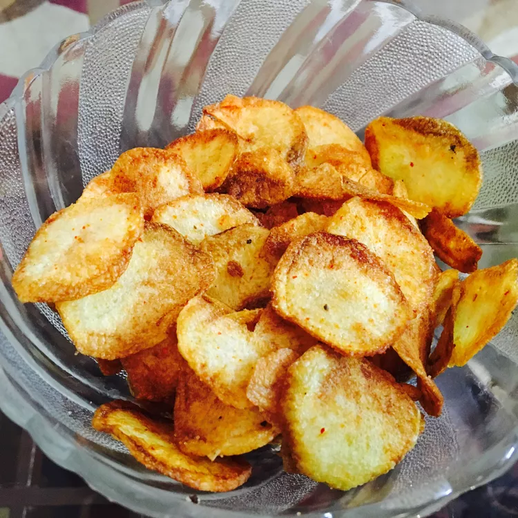

Home-style Potato Chips Recipe
Back to the menu
Source: Homestyle Potato Chips

Homemade potato chips are fun and easy. Guaranteed they won't last long!
Experiment with the thickness; you may like them thicker or thinner.
Ingredients
- 4 medium potatoes, peeled, and sliced paper-thin
- 3 tablespoon salt, plus more to taste
- 1 quart oil for deep-frying
Steps
- Transfer potato slices to a large bowl of cold water as you slice them.
- Drain slices and rinse under cold water. Refill the bowl with water, add 3 tablespoons salt, and put slices back in the bowl. Let potatoes soak in the salty water for at least 30 minutes.
- Drain and rinse slices again. Pat dry.
- Heat oil in a deep-fryer to 365 degrees F (185 degrees C).
- Working in small batches, fry potato slices until golden. Remove with a slotted spoon and drain on paper towels. Continue until all the slices are fried.
- Season potato chips with additional salt if desired.